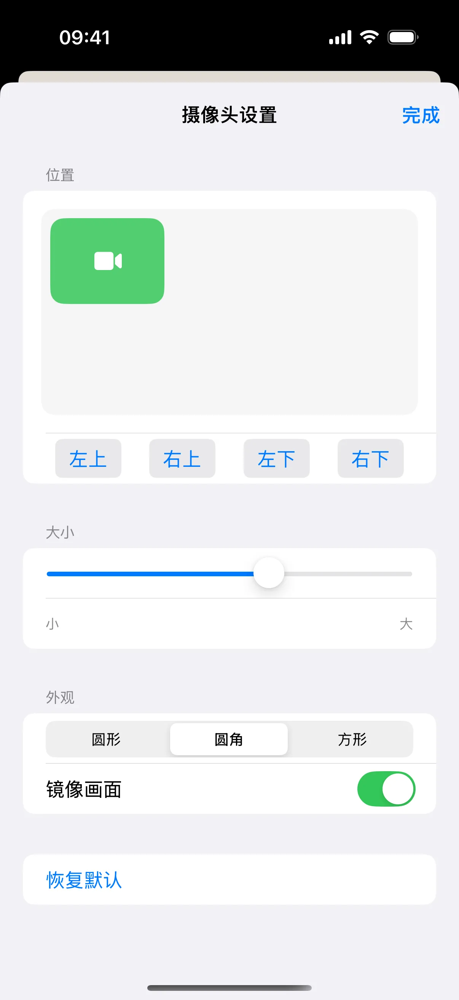
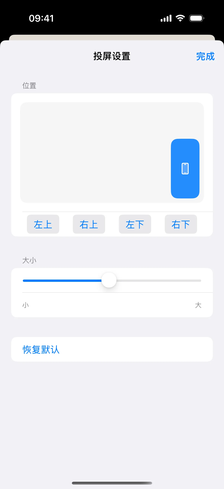
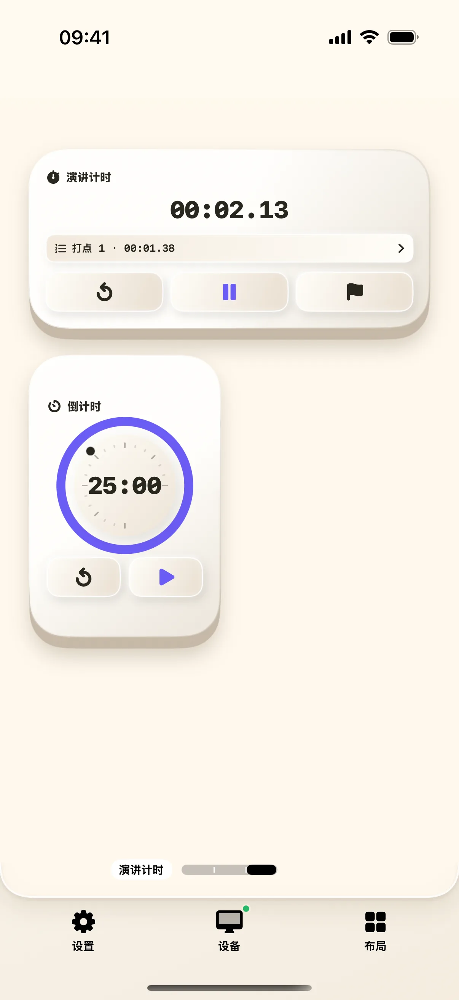

正式演讲前，先把浮窗放到不遮挡内容的位置，再用计时器做一次简短排练。本文分别演示设置入口和分段计时，帮助你区分长按设置与点击启动。
开始前准备
- iPhone / iPad 安装奶猫妙控 1.2.0，Mac 安装同版本配套端；完成配对，并允许 Mac 端的辅助功能权限。需要电脑画面时，再开启屏幕录制权限。
- 准备一个可丢弃的演示文件。要使用摄像头或手机投屏，再按实际出现的系统提示授予相应权限；仅调整浮窗设置不需要开始采集。
1. 进入“演讲辅助”桌面
在 App 底部点“布局”，在列表中找到“演示”。布局较多时用搜索框搜索名称；有多个桌面的方案先点右侧箭头展开，再点桌面名称；搜索具体桌面名称也能找到它。展开演示方案后选择“演讲辅助”。先认出上一页、下一页、iPhone 摄像头、手机投屏等入口。
要验证翻页，先在 Mac 进入实际放映状态，再点一次“下一页”，检查是否前进；编辑幻灯片时与放映时的快捷键行为可能不同。

2. 长按“iPhone 摄像头”，设置浮窗
在“iPhone 摄像头”按钮上长按约一秒，松手后应进入“摄像头设置”。点“左上”，再拖动“浮窗大小”滑块；需要圆角时点“圆角”。
检查位置预览与大小变化。镜像画面只影响摄像头展示方向，是否开启以你希望观众看到的效果为准。设置完成点“完成”，回到演讲辅助。

3. 为手机投屏单独设置位置
长按“手机投屏”，打开“投屏设置”。它有自己的位置和大小设置，不需要沿用摄像头的位置。选一个不会挡住重点内容的位置，再点“完成”。
投屏设置里没有摄像头的镜像开关。若看见系统广播选择界面，说明触发了点击启动流程；先退出，再重新长按设置按钮。

4. 需要展示时，再点击启动
调整好后，短按摄像头入口会进入摄像头流程；短按手机投屏入口会进入投屏流程。按系统界面完成启动后，必须在 Mac 确认画面出现、位置合适、内容正确。
先用一张无敏感内容的页面试播。结束时使用对应关闭或系统停止广播入口；回到设置页面并不等于已经停止系统广播。
5. 切到“演讲计时”，开始排练
点“布局”，搜索“演讲计时”，点对应桌面。找到演讲计时器，点“开始”；讲完开场后点“打点”，继续讲下一部分。
“打点”留下分段记录，不会结束整段计时。排练结束点“暂停”，检查累计时间和分段记录。想开始新一轮时，先确认旧记录不再需要，再点“复位”。

6. 用一次短排练检查整条流程
正式使用前，按顺序练习：打开演示文件、确认翻页、显示需要的浮窗、开始计时、打一个分段点、暂停并关闭采集。每一步都在 Mac 或手机相应界面核对一次。
如果只需要遥控翻页，可以保留演讲辅助桌面，不必同时开启摄像头、投屏和画板。
操作不符合预期时
长按为什么直接打开了摄像头？
设置使用长按，启动使用短按。按住约一秒后再松手，确认进入的标题是“摄像头设置”；不要在长按后额外补一次点击。
计时器有变化，Mac 上却没出现画面？
计时与画面采集是不同功能。计时器运行不表示摄像头或投屏已经开始，仍需检查系统采集状态与 Mac 接收画面。
本文按奶猫妙控 1.2.0 的界面与操作编写，更新于 2026 年 9 月 10 日。查看更新日志 · 连接与权限帮助。